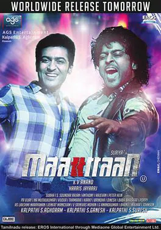

The genetics
Genetics frames the story through a scientist whose ambition turns criminal. Ramachandran's "baby designing" is an attempt to engineer a multitalented child by combining DNA from several gifted people; the result is conjoined twins, whom the film presents as the cost of his failed experiment. He first works for the Soviet state and later for himself, and his Energion business repeats the pattern on a national scale: an enhancement product that harms the children who drink it, which he describes as using the whole of society as his research laboratory, and which he protects by murder, including that of his own son. A review in Behindwoods notes that the film dwells on the adverse effects of genetic engineering "when man starts thinking himself to be God". The premise is fanciful: a person cannot be assembled from the DNA of several donors, and conjoined twins arise when a single fertilised egg fails to split completely, not from genetic design.
How genetics is portrayed
- Overall portrayal of genetics
- negative A cautionary thriller about genetic engineering 'when man starts thinking himself to be God': the geneticist's ambition becomes criminal and is punished with a grisly death.
- Outcome of the genetic intervention
- negative The 'baby designing' is a failed experiment producing conjoined twins sharing one heart; it frames a story in which the scientist murders to protect his schemes and one twin dies.
- Ramachandran
- villain Aim: curiosity, ideological (negative). A geneticist working for the Soviet Union who 'designs' a multitalented baby from several people's DNA, producing conjoined twins; he later uses society as his laboratory with an adulterated product and orders murders, including his own son's. The film stages him as a villain who thinks himself God.
The story
Ramachandran, an Indian geneticist working for the Soviet Union, tries to create a person with many talents through "baby designing". The result is his sons Akhilan and Vimalan, conjoined twins sharing a single heart. After the Soviet collapse he returns to India and becomes a billionaire with Energion, a best-selling children's energy drink. The twins are drawn into a conspiracy when a Russian spy claims that Energion is adulterated and could kill thousands of children, and is then murdered. Vimalan is fatally attacked, and his heart is transplanted into Akhilan when the twins are separated. In the post-Soviet state of Ukvania, Akhilan discovers that Energion began as a steroid to boost athletes that left Soviet Olympians critically ill, a scandal covered up with a faked plane crash. He exposes his father, who ordered Vimalan's killing, and who admits that the twins are the product of his failed experiment, made from several talented people's DNA.